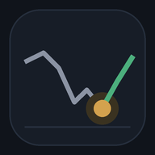

Aktien-Watcher
Indizes
Opportunitäten (Einzeltitel)
Worum geht es?
Der Aktien-Watcher durchsucht rund 650 Titel (SMI, DAX, MDAX, S&P 500, Nasdaq 100) und zusätzlich Nebenwerte (SDAX, S&P 600, nur für die Liste «Unterbewertet») und zeigt dir die, die einen genaueren Blick lohnen. Er kauft nichts und gibt keine Kaufsignale. Er ist eine strukturierte Checkliste mit Ranking.
Ein Programm auf deinem PC (der Scanner) holt die Kurse und Kennzahlen und rechnet alles aus. Diese App zeigt nur die Ergebnisse und speichert dein Depot.
Die Register
| Register | Was du dort siehst |
|---|---|
| Übersicht | Neun Indizes (S&P 500, Dow Jones, Nasdaq 100, Russell 2000, SMI, DAX, MDAX, SDAX, Euro Stoxx 50) mit Index-Alarm, Depot-Alarme, Marktumfeld, das Gesamtranking (Top 10 aller Kategorien, je Titel mit Einstiegszeitpunkt) und die ersten drei jeder Kategorie. |
| Dashboard | Dein Konto und Depot in Kacheln, Wertentwicklung, Verteilung, Gewinn je Position und die Bewertung der Positionen. |
| Kandidaten | Oben die Liste wählen: «Alle» = ein gemeinsames Ranking (Gesamtscore), daneben die vier Einzellisten (Einbrüche, Stars, Wachstum, Unterbewertet). Darunter Sortierung, Ampel, Index und «Nur Einstiegszone». Antippen eines Titels öffnet Einstiegszone, Kriterien und Schlagzeilen. «+ Ins Depot legen» übernimmt den Titel ins Depot. |
| Depot | Deine Positionen mit Bewertung und Alarmen, Kontobewegungen, «Einzahlungen ändern», Export und Import. Neue Positionen legst du unter «Kandidaten» mit «+ Ins Depot legen» an. |
| Info | Diese Erklärung und das Journal (Hat der Score etwas gebracht?). |
Die vier Listen
| Liste | Idee und Auslöser |
|---|---|
| Einbrüche | Gute Firma wird billiger und erholt sich. Auslöser: in den letzten 10 Handelstagen ≥5 % an einem Tag, ≥10 % in einer Woche oder ≥20 % in einem Monat gefallen. Die 150 stärksten Einbrüche werden bewertet, die 60 besten angezeigt. Für Einzeltitel nicht belegt. |
| Stars | Starke Trends laufen weiter. Auslöser: höchstens 10 % unter dem 52-Wochen-Hoch, über der 200-Tage-Linie und 6-Monats-Rendite im obersten Fünftel. Die 100 stärksten werden bewertet, die 40 besten angezeigt. Der Kursteil liesse sich testen (stars_backtest.py, Ergebnis: nicht bestanden), der Wachstumsteil nicht. |
| Wachstum | Firmen mit starkem Geschäftswachstum. Auslöser (kein Kurssignal): Umsatzwachstum ≥10 % und Gewinnwachstum positiv, jeweils für das letzte Quartal gegenüber Vorjahr und laut Prognose. Die 40 besten werden angezeigt. Risiko: teuer bezahltes Wachstum. Der Score gewichtet Schätzungsrevisionen und Wachstum im Verhältnis zur Bewertung. |
| Unterbewertet (Wende) | Günstige, gesunde Firmen vor der Wende, auch Nebenwerte. Auslöser: Mittel aus Kurs-Buchwert, KGV und Free-Cashflow-Rendite im günstigsten Drittel (je Branche, sonst im ganzen Universum), Free Cashflow positiv, Marktkapitalisierung ≥ 150 Mio, Piotroski mindestens 75 % der Punkte. Wendezeichen im Kurs (über der 50-Tage-Linie, 3 Monate positiv) fliesst in den Score ein. Ohne vollständige Daten keine Aussage: fehlt eine der Zahlen oder der Jahresabschluss, kommt der Titel nicht in die Liste (er gilt nicht als «neutral»). Banken fallen deshalb meist heraus. Die 30 besten werden angezeigt. |
- Ein Titel kann in mehreren Listen stehen (Etiketten «Einbruch», «Star», «Wachstum»). «Im Rücksetzer» heisst: Wachstumstitel mindestens 10 % unter dem Hoch oder im Einbruch-Scan, also starkes Geschäft zum tieferen Kurs.
- Für Wachstum braucht der Scanner Kennzahlen jedes Titels. Er prüft pro Lauf rund 80 Titel neu, nach wenigen Läufen ist das ganze Universum abgedeckt (Fortschritt auf der Übersicht).
- Piotroski-Score (0–9) prüft aus den letzten zwei Jahresabschlüssen: Gewinn positiv, Cashflow positiv, Rendite gestiegen, Cashflow höher als Gewinn, Verschuldung gesunken, Liquidität gestiegen, keine neuen Aktien, Bruttomarge gestiegen, Kapitalumschlag gestiegen. Er trennt günstige, gesunde Firmen von «Value-Fallen».
- Die Jahresabschlüsse holt der Scanner schrittweise (40 Titel pro Scan). Die Liste «Unterbewertet» füllt sich deshalb erst über mehrere Läufe. Die Übersicht zeigt den Stand der Abdeckung.
- Nebenwerte haben oft keine Analystenschätzungen. Diese Kriterien sind dann grau und zählen nicht mit.
- Alle Schwellen stehen in
aktien_watcher_config.jsonund lassen sich ändern.
Wie bewertet wird: vier Anzeigen
| Anzeige | Bedeutung |
|---|---|
| Ampel | Regelbasierte Warnlampe. Grün: kein rotes Kriterium und mindestens 5 grüne (mind. 60 % der bewertbaren). Rot: ein kritisches Kriterium rot (Bilanz, sinkende Schätzungen, Warn-Schlagzeile), Umsatz und Gewinn rot, oder zwei rote Kriterien. Sonst gelb. Rote Titel stehen immer am Ende des Rankings. |
| Score | 0–100, gewichteter Durchschnitt der Kriterien einer Liste (Grün 1, Gelb ½, Rot 0). Jede Liste gewichtet anders. Er sortiert die Liste. Scores verschiedener Listen sind nicht vergleichbar. |
| Gesamtscore | 0–100, für alle Titel mit denselben Kriterien und Gewichten gerechnet, ohne Kurssignale. Er misst die Unternehmensqualität und ist die Grundlage des Rankings «Alle». Nur er ist über die Listen hinweg vergleichbar. |
| x von y erfüllt | Anzahl grüner Kriterien von den bewertbaren. Kriterien ohne Daten sind grau und zählen nicht mit (die übrigen Gewichte werden hochgerechnet). |
Warum der Gesamtscore keine Kurssignale enthält: Sonst verlöre ein gefallener Titel automatisch gegen einen steigenden. Die Kurssignale stecken im Auslöser der Liste (Typ-Etikett). Ein Titel mit hohem Gesamtscore und Etikett «Einbruch» ist also ein gutes Unternehmen zum tieferen Kurs.
Die Kriterien und ihre Gewichte
| Kriterium | Einbr. | Stars | Wachst. | Wende | Gesamt |
|---|---|---|---|---|---|
| Gewinnwachstum (Prognose) | 18 | 14 | 15 | 5 | 18 |
| Umsatzwachstum (Prognose) | 14 | 10 | 15 | 4 | 14 |
| Schätzungsrevisionen (30 Tage) | 14 | 20 | 18 | 10 | 20 |
| Verschuldung & Cashflow | 12 | 5 | 6 | 10 | 12 |
| Betriebsmarge | 10 | 5 | 10 | 6 | 10 |
| Bewertung (Forward-KGV) | 10 | – | – | – | – |
| PEG (KGV im Verhältnis zum Wachstum) | – | 10 | 14 | – | 14 |
| Günstig bewertet (KBV, KGV, FCF-Rendite) | – | – | – | 22 | – |
| Piotroski (Jahresabschlüsse) | – | – | – | 22 | – |
| Wendezeichen im Kurs | – | – | – | 14 | – |
| Analysten (Empfehlung, Kursziel) | 8 | 4 | 4 | 3 | 8 |
| Ursache des Einbruchs | 8 | – | – | – | – |
| Relative Stärke (6 Monate) | – | 18 | 8 | – | – |
| Trend (200-Tage-Linie, Hoch) | – | 10 | 5 | – | – |
| Innovation (Forschungsanteil) | 3 | 2 | 3 | 2 | 2 |
| Schlagzeilen (Stichwortsuche) | 3 | 2 | 2 | 2 | 2 |
- Die Gewichte sind eine begründete Annahme (Prognosen, Revisionen und Qualität zählen am meisten, grobe Stichwort-Kriterien am wenigsten), nicht per Backtest belegt. Anpassbar in der Config unter «gewichte», «gewichte_stars», «gewichte_wachstum», «gewichte_wende», «gewichte_gesamt».
- PEG = Forward-KGV geteilt durch das erwartete Gewinnwachstum in % (≤1.5 grün, ≤2.5 gelb, sonst rot).
- Ursache des Einbruchs: Schlagzeilen der letzten Tage (Yahoo Finance, Google News) werden per Stichwort Themen zugeordnet (Klage, Kartell, Untersuchung, Gewinnwarnung …). Das ist eine Einordnung, keine Zusammenfassung: den Inhalt musst du in der Meldung lesen.
- «Neue Produkte» und «Innovation» werden nur über Stichwörter und den Forschungsanteil geschätzt. Daten von Yahoo Finance können Lücken oder Fehler haben.
Einstiegszone: wann kaufen?
- Der Score sagt, was ein guter Titel ist. Die Einstiegszone fragt, ob der Kurs jetzt ein vernünftiger Zeitpunkt ist. Sie wird aus Kursdaten berechnet und mit «Einstieg: ja» bzw. «abwarten» markiert.
- Einbruch und Wende: ja, wenn sich der Kurs stabilisiert hat, also seit mindestens 3 Handelstagen kein neues 10-Tage-Tief mehr entstanden ist (Zusatz: «Erholung bestätigt», wenn der Kurs über dem Höchstkurs der letzten 5 Tage schliesst). Verhindert, in ein fallendes Messer zu greifen.
- Star und Wachstum: ja, wenn der Titel über der 200-Tage-Linie liegt und einen Rücksetzer hat (RSI ≤ 40), nahe an der 50-Tage-Linie steht (höchstens 3 % darüber) oder gerade auf ein neues 52-Wochen-Hoch ausbricht. Sonst «abwarten» (läuft heiss oder Trend gebrochen).
- Marktumfeld: Der Durchschnitt aller Titel über seiner 200-Tage-Linie gilt als günstiges Umfeld. Darunter ist Vorsicht angebracht. Die Anzeige steht auf der Übersicht.
- Nicht belegt: Ob diese Regeln den Einstieg wirklich verbessern, prüft
Einstieg_Backtest.batauf deinem PC (Zusatzertrag mit Regel gegenüber ohne Regel, Hold-out, Mehrfachtest). Bis das Ergebnis vorliegt, ist die Einstiegszone eine Orientierung, kein Signal. Zusätzlich hält das Journal fest, wie sich Titel mit «ja» und «nein» tatsächlich entwickeln. - Die Einstiegszone wird beim Vollscan berechnet und ändert sich zwischen zwei Scans nicht.
Konto, Depot und Alarme
- Kontostand = Einzahlungen − Einstand Depot. Mit «Einzahlungen ändern» (Register Depot) legst du den Gesamtbetrag fest, z. B. 5000, oder zahlst mit + / − einen Betrag ein bzw. aus. Jeder Kauf senkt den Kontostand um den Einstand, jeder Verkauf erhöht ihn um den Erlös. Kontostand und Depotwert werden nie addiert.
- Einstand Depot = Summe der gekauften Titel zum Kaufpreis (in CHF). Depotwert (IST) = aktueller Marktwert. Gewinn / Verlust = Depotwert − Einstand. Heutige Veränderung = Tagesbewegung der Titel in CHF und in % vom Depotwert.
- Hattest du einen Titel schon vorher, setzt du beim Hinzufügen den Haken «bereits vorhanden»: Der Betrag wird dann als Einzahlung verbucht und der Kontostand bleibt gleich. «Verkauft / entfernen» ohne Preis schreibt den Einstand wieder gut (für Fehleingaben).
- Beim Ins-Depot-Legen merkt sich die App Liste, Ampel und Score zum Kaufzeitpunkt. Die laufende Bewertung nutzt das Profil, in dem du gekauft hast.
- Depot-Alarme (Hinweise zum Nachschauen, keine Verkaufsaufträge): Rückgang vom Höchststand ≥8 % (wenn der Titel zwischenzeitlich ≥3 % im Plus war), Verlust ≥10 % unter Einstand, Ampel verschlechtert seit dem Kauf, Score um ≥15 Punkte gesunken. Der Höchststand stammt aus dem Kursverlauf seit Kauf (höchstens 60 Handelstage) und wird danach bei jedem Abgleich nachgeführt.
Journal: der eigene Beleg
- Der Scanner hält jeden bewerteten Titel (auch die nicht angezeigten) mit Liste, Score, Gesamtscore, Ampel und Kurs fest, je Titel und Liste höchstens alle 30 Tage.
- Nach 1, 3 und 6 Monaten vergleicht die Tabelle unten, wie sich Titel mit hohem (≥70), mittlerem (45–69) und tiefem Score (<45 oder rot) gegenüber dem Durchschnitt des Universums entwickelt haben, ebenso Titel mit Einstiegszone «ja» gegenüber «nein». Wirkt der Score, muss «≥70» dauerhaft klar besser sein als «<45».
- Erste Zahlen gibt es nach rund einem Monat, aussagekräftig wird es ab etwa 30 Fällen je Feld und über verschiedene Marktphasen. Grenzen: vor Kosten, keine Beta-Bereinigung, nur Titel des heutigen Universums.
Synchronisation
- Der Scanner schreibt die Daten automatisch in den Online-Speicher (JSONBin): werktags 09–18 Uhr alle 30 Minuten, sonst alle 60 Minuten. Die App liest alle 15 Minuten nach, solange sie offen ist.
- «↻ Neu laden» löst einen Abgleich auf Abruf aus: Die App sendet ein Signal an den PC (über den Gratisdienst ntfy.sh mit geheimem Kanalnamen, Inhalt nur «sync»), der PC holt frische Kurse und schreibt sie in den Speicher. Nach ein bis zwei Minuten erscheinen die Daten. Der PC muss dafür laufen.
- Das Depot wird in der App geändert und vom Scanner übernommen (die neuere Fassung gewinnt).
Was ist belegt – und was nicht?
Index-Alarm (belegt, mit Einschränkungen): Kauf von S&P 500, SMI oder DAX nach einem Rückgang (Tag −2.5 %, Woche −4 %, Monat −8 %) war im Hold-out (ca. 2015–2026) in 18 von 18 Fällen besser als der Durchschnittstag. Trefferquote 62–91 %, Mehrertrag +0.5 bis +5.9 % nach 3 Monaten. Aber: nur 11–35 Ereignisse je Test, überwiegend Aufschwungphase, ca. 2–3 Signale pro Jahr und Index.
Einbrüche bei Einzeltiteln (nicht belegt): Nach Beta-Bereinigung blieb im Backtest wenig übrig (nur Woche −10 %, 6 Monate, +2.3 % im Hold-out; Survivorship Bias nicht ausgeschlossen). Ein Qualitätsfilter aus Kursdaten brachte keinen Vorteil.
Stars, Kursteil (nicht belegt): Der Test mit Kursdaten (2003–2026, ca. 470 Titel) bestand nicht. In der Suchperiode bis ca. 2019 lag der Mehrertrag bei allen Varianten unter null, im Hold-out war er bei längeren Horizonten positiv, aber nicht signifikant. Momentum hängt offenbar von der Marktphase ab.
Unterbewertet / Wende (nicht belegt): Günstige, gesunde Firmen (Value plus Qualität) haben historisch Mehrertrag gebracht, aber unregelmässig und mit vielen Fehlschlägen. Nebenwerte sind zusätzlich schwerer handelbar (grössere Kursspannen, weniger Umsatz). Mit den Gratis-Daten lässt sich das nicht rückwirkend testen (Kennzahlen und Jahresabschlüsse gibt es nur für den heutigen Stand). Das Journal sammelt den Beleg.
Einstiegsregeln (noch nicht geprüft): Die Regeln der Einstiegszone sind testbar. Ergebnis von Einstieg_Backtest.bat wird nach dem ersten Lauf hier nachgetragen.
Wachstum, Gewinnschätzungen, Revisionen (nicht testbar): Gibt es gratis nicht rückwirkend. Dafür sammelt das Journal den Beleg über die Zeit.
Ampel, Score und Gesamtscore sind eine Checkliste, kein Kaufsignal und keine Anlageberatung.